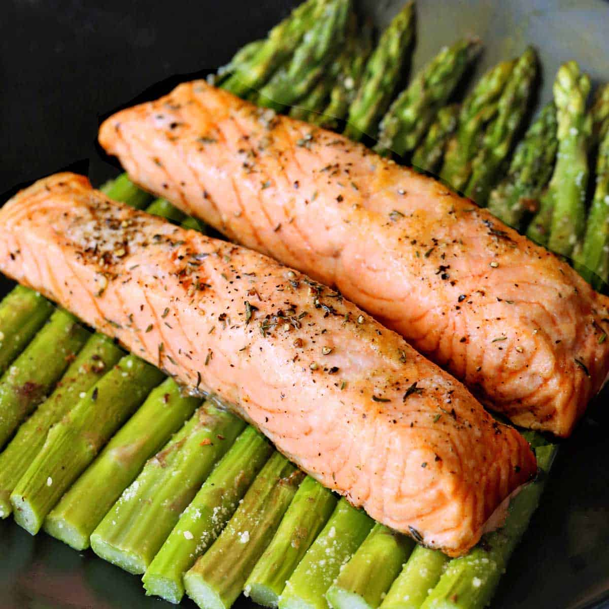

The dish we are creating is a garlic lemon baked salmon. This is a very
light and healthy dish, perfect for dieting. The lemon and garlic perfectly
complement the buttery soft salmon.
The dish is very simple to make, requiring only a few ingredients.
This salmon is perfect to pair with some green vegetables.
The key to this decision is to not dry out the salmon. As long as it's not
overcooked, you'll have the perfect fish dish that everyone will love!